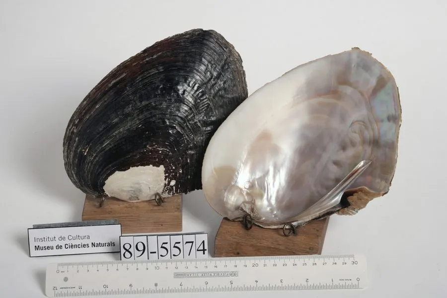

软体动物 · 动物界
三角帆蚌 Hyriopsis cumingii

中国特有的淡水蚌，壳顶后方有一片帆状突起，是培育珍珠的主要母蚌，也被称为淡水珍珠蚌，多用于插核育珠。
- 分类
- 门软体动物门纲双壳纲目蚌目科蚌科属帆蚌属
- 栖息环境
- 长江中下游及淮河流域的湖泊、河流，水流平缓的泥沙底浅水区
- 地理分布
- 中国长江中下游及淮河流域的湖泊和河流，浙江、江苏、安徽、江西等地
- 保护级别
- 尚无保护级别；野生种群因采捕、污染和栖息地改变下降
物种志
三角帆蚌的贝壳大而扁平，壳长可达二十厘米以上，壳质坚厚，外形略呈三角形，壳面呈黑褐、黄褐至灰黑色，有粗糙的同心生长纹和放射状的脊，壳顶后方有一片明显的帆状突起，像一面竖起的三角帆，三角帆蚌之名由此而来。壳内面有珍珠光泽，呈银白或淡粉色，铰合部有发达的铰合齿。足部肥厚，斧状，能在泥沙中掘穴。
它分布于中国长江中下游及淮河流域的湖泊和河流，栖息在水流平缓、底质为泥沙的浅水区，靠鳃滤食浮游植物和有机碎屑。雌雄异体，繁殖期在春夏，幼虫为钩介幼虫，需要寄生在鱼类鳃或鳍上完成变态，再脱落到底质中生活。三角帆蚌是淡水培育珍珠的主要母蚌，中国的淡水珍珠产量长期居世界前列，多采用它进行插核育珠。目前尚无保护级别，野生种群因采捕、水体污染和栖息地改变而下降。
形态与习性
- 食性靠鳃滤食浮游植物和有机碎屑
- 壳长可达二十厘米以上，壳质坚厚
- 壳形略呈三角形，壳顶后方有帆状突起
- 繁殖春夏繁殖，钩介幼虫需寄生鱼类完成变态
- 育珠中国淡水珍珠的主要母蚌，多用于插核育珠
- 分布长江中下游及淮河流域湖泊、河流
趣味知识
- 三角帆蚌壳顶后方那片突起像一面小帆，是它区别于其他淡水蚌的标志。
- 它的幼虫必须寄生在鱼鳃或鱼鳍上才能完成变态，脱落后再到底质中生活。
- 中国淡水珍珠产量长期居世界前列，三角帆蚌是最主要的育珠母蚌。